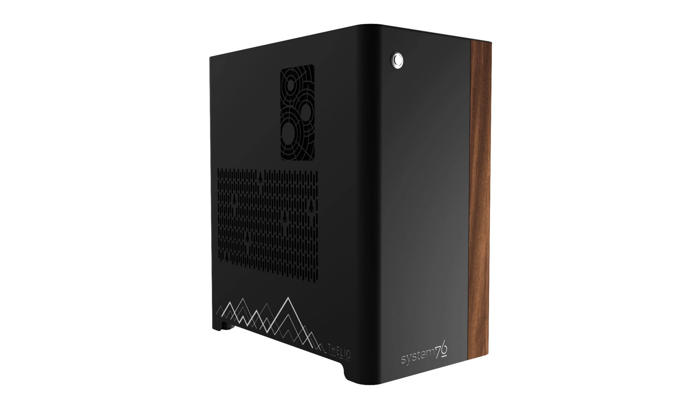

Thelio Mega (thelio-mega-r1.0)

The System76 Thelio Mega is a desktop with the following specifications:
- CPU options
- Motherboard
- Gigabyte TRX40 Aorus Xtreme (rev. 1.0 or 1.1) running System76 Firmware (non-open)
- AMD TRX40 chipset
- Daughterboard
- Thelio Io board running open-source firmware
- GPU options
- Up to four GPUs, depending on configuration (2x PCIe 4.0 x16 and 2x PCIe 4.0 x8)
- GPU size:
- Internal clearance: 425.80mm
- Recommended maximum length:415.80mm
- Tested with the following GPUs:
- NVIDIA Quadro RTX 4000 (maximum 4)
- 3x DisplayPort 1.4, DisplayPort over USB-C (VirtualLink)
- NVIDIA GeForce 2080 Ti (maximum 4)
- HDMI 2.0b, 3x DisplayPort 1.4, DisplayPort over USB-C (VirtualLink)
- NVIDIA GeForce RTX 3090 (maximum 3)
- HDMI 2.1, 3x DisplayPort 1.4a
- NVIDIA Quadro RTX 5000 (maximum 4)
- 4x DisplayPort 1.4, DisplayPort over USB-C (VirtualLink)
- NVIDIA Quadro RTX 6000 (maximum 4)
- 4x DisplayPort 1.4, DisplayPort over USB-C (VirtualLink)
- NVIDIA Quadro RTX 8000 (maximum 4)
- 4x DisplayPort 1.4, DisplayPort over USB-C (VirtualLink)
- NVIDIA Quadro RTX 4000 (maximum 4)
- Memory
- Up to 256GB (8x32GB) quad-channel ECC Unbuffered DDR4 DIMMs @ 3200 MHz
- Tested with the following RAM modules (may ship with other tested modules):
- Networking
- 2x 10-Gigabit Ethernet (Intel 10GbE LAN chip)
- Combined total is 10Gbit/s; ports will run at 5Gbit/s if used at the same time.
- Wi-Fi 6 (Intel AX200)
- 2x 10-Gigabit Ethernet (Intel 10GbE LAN chip)
- Power
- EVGA SuperNOVA 1600W T2 80+ Titanium Certified PSU
- C19 power cord
- Sound
- 3.5mm line out, line in, microphone jacks
- Optical S/PDIF out
- Up to 7.1-channel audio output
- Realtek ALC4050H + ALC1220-VB audio chipset
- HDMI, DisplayPort, USB-C DisplayPort audio (depending on GPU)
- Storage
- 4x M.2 (PCIe Gen 4)
- Backwards compatible with M.2 SATA and PCIe Gen 3.
- 8x 2.5" SATA
- When using all four M.2 slots, some SATA ports will not function. See Parts & Repairs for details.
- 4x M.2 (PCIe Gen 4)
- USB
- 7x USB 3.2 Gen 2 Type-A
- 1x USB 3.2 Gen 2 Type-C
- Dimensions
- 47.8cm x 26.3cm x 43.8cm